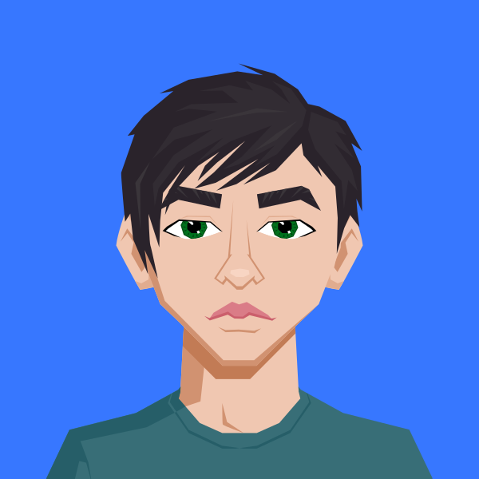

Projetos

Guilherme Morais
Back-End Developer, DevOps
Sou apaixonado pela área de tecnologia e sempre busco inovar e aprender mais a cada dia. Com experiência em frameworks web como Next.js, Laravel, Tailwind e React, tenho me especializado tanto no desenvolvimento front-end quanto no back-end. Tenho a oportunidade de liderar projetos de software, guiando equipes e garantindo a entrega de soluções robustas e de alta qualidade. Como profissional, sou movido pelo desafio de criar sistemas eficientes e escaláveis, sempre focando em atender às necessidades dos usuários e promover a evolução tecnológica.
20 Abr, 2024
Criação do Projeto "Lybris"
Primeiro commit e inicio de uma aplicação robusta para bibliotecas.
15 Set, 2024
Criação do Projeto "DoeIt"
Primeiro commit da aplicação de doação comunitária com validação por qrcodes modernos.
9 Fev, 2025
Deploy do MCPFlix
Deploy da aplicação pela vercel para exibição de filmes da escola Maria Célia Pinheiro Falcão.
Certificações
Education
2025
AWS Academy Graduate
Amazon Web Services (AWS)
2023
Introdução à Ciência da Computação com Python parte 2 - USP/IME-USP
Universidade de São Paulo (USP)
2025
Técnico em Desenvolvimento de Sistemas
EEEP Maria Célia Pinheiro Falcão
2025
Google Cybersecurity Professional